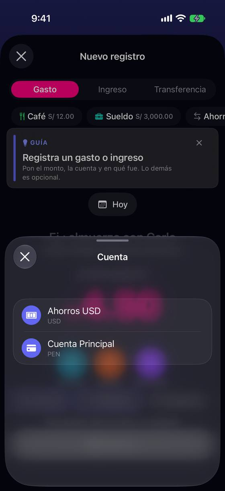

El importe escrito en soles pasa a dólares al elegir la cuenta, sin aviso
Hoy
Capturas del simulador (app de origin/2.3, semillas de prueba). Pasos hoy: el mismo camino; el error no cuesta toques, cuesta un registro mal guardado.




De dónde sale
- Captura Capturas 03 → 07: «S/ 4.50» pasa a «$ 4.50» y «≈ S/ 16.74» al elegir «Ahorros USD»; la pantalla de éxito dice «$ 4.50».
- Captura Captura 05: la hoja «Cuenta» lista «Ahorros USD» antes que «Cuenta Principal».
- Código
NewTransactionView.swift:1040-1044: la divisa del monto es la de la cuenta, o la principal si aún no hay (decisión L2-16). - Hipótesis Con una sola cuenta o con la última usada puesta (L2-1) no pasa; muerde en el primer registro con dos cuentas y en cada cambio de cuenta.
Las opciones
De 3 a 5 alternativas con el mismo caso. Desliza cada recorrido; el anillo cian marca dónde toca Ana.
Si cambia la moneda, el formulario lo dice
Al elegir una cuenta en otra moneda, el símbolo cambia con una animación corta y aparece una línea bajo el importe: «Ahora en dólares (Ahorros USD) · ≈ S/ 16.74». Si fue sin querer, se ve antes de guardar.
A favor
- Cambio mínimo: una línea y una animación.
- Sirve igual para gasto, ingreso y favoritos.
En contra
- Avisa, pero no evita el error: quien no lee guarda igual.
- Una línea más en un formulario ya cargado.
La cuenta va antes del importe
La cuenta sube al lado de la pregunta: «¿Cuánto gastaste con Cuenta Principal ▾?». Se elige o se confirma primero y el importe se escribe ya en su moneda; el chip de cuenta de abajo desaparece.
A favor
- Quita el problema de raíz: no hay importe que cambie de moneda.
- La frase se lee como la persona piensa el gasto («con qué pagué»).
En contra
- Mueve una pieza que L2 decidió poner abajo con los demás chips (reabre parte de L2-1/L2-16).
- Con una sola cuenta la frase sobra: tiene que esconderse.
Preguntar si el importe cambia de moneda
Si hay importe escrito y la cuenta elegida tiene otra moneda, una hoja corta pregunta: «¿4.50 soles o dólares?» con las dos opciones calculadas («US$ 4.50» · «US$ 1.21, que son S/ 4.50»).
¿4.50 en qué moneda?
Ahorros USD está en dólares.
A favor
- Evita el error sin depender de que alguien lea una línea.
- Sirve para quien paga en dólares desde una cuenta en soles.
En contra
- Una pregunta más, justo en el camino rápido; solo aplica con importe ya escrito.
- La conversión usa la tasa del día: hay que decir cuál.
La lista de cuentas empieza por la que toca
La hoja de cuentas deja de ir por orden alfabético: arriba la última usada, después las de la moneda principal y al final las de otra moneda, con su moneda bien visible. Sin aviso nuevo; menos ocasiones de error.
A favor
- Sin piezas nuevas en el formulario.
- Ayuda también a la transferencia y a los favoritos.
En contra
- No avisa si igual elige la de dólares.
- El orden cambia según el uso: puede despistar a quien se lo sabe de memoria.
Lado a lado
La última pantalla de cada recorrido, frente a hoy.
Comparación
| Opción | Pasos para el caso (maqueta) | Esfuerzo | Riesgo | Reabre |
|---|---|---|---|---|
| Hoy | el mismo camino; el error no cuesta toques, cuesta un registro mal guardado. | — | — | — |
| M1 · Si cambia la moneda, el formulario lo dice | igual que hoy | bajo | bajo | — |
| M2 · La cuenta va antes del importe | igual que hoy | medio | medio | L2-16 |
| M3 · Preguntar si el importe cambia de moneda | +1 toque cuando cambia la moneda | medio | medio | — |
| M4 · La lista de cuentas empieza por la que toca | igual que hoy | bajo | bajo | — |
Lente de perfiles
Perfiles simulados, no entrevistas Los siete perfiles de la revisión del usuario nuevo, usados como lentes. riesgo alto de trabarse · medio · bajo.
| Perfil | Hoy | M1 | M2 | M3 | M4 |
|---|---|---|---|---|---|
| P1 · Migrante de Excel | — | — | — | le corta el ritmo | — |
| P2 · Principiante abrumado | no sabe qué es «≈» | puede no leerla | frase natural | pregunta de divisas | — |
| P3 · Anotador rápido que no lee | no lee: guarda en dólares | no lee | — | un toque más | — |
| P4 · Experto de otra app | lo ve | — | — | — | el orden se mueve |
| P5 · Llega por una invitación de grupo | — | — | — | — | — |
| P6 · Varias monedas y tarjeta | su caso: soles y dólares | lo ve antes de guardar | no hay sorpresa | decide él | puede elegir mal igual |
| P7 · Texto grande, a veces en iPad | el símbolo es pequeño | — | frase larga con texto grande | — | — |
Recomendación: M1
Decirlo con palabras cuando cambia es lo más barato y no reabre nada; combinado con M4 (la cuenta en moneda principal primero) corta casi todos los casos. M2 lo resuelve de raíz pero reabre L2-16 y mueve la cuenta de sitio; M3 pregunta de más en el camino rápido.
Qué decide Jürgen
- ¿Aviso en línea (M1), y además ordenar la hoja de cuentas (M4)?
- ¿Se reabre L2-16 para poner la cuenta junto a la pregunta (M2)?
Revisión por vistas 2.3 · Nuevo registro. Maquetas en HTML con datos ficticios: no son la app. Pasos contados sobre las maquetas; los de «Hoy», en el simulador o en el código citado.